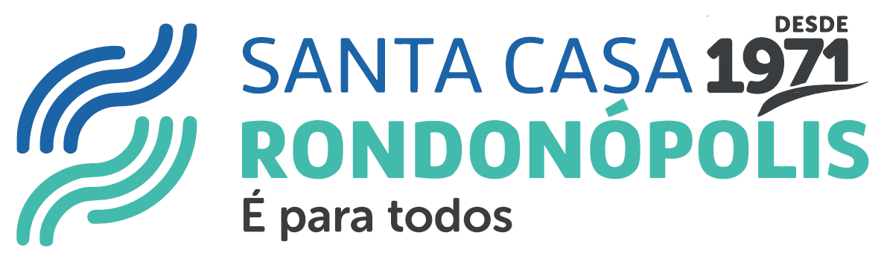

CHECKLIST

Tipo de Prontuário:
Prontuário Cirúrgico
Prontuário Clínico
Prontuário Clínico — RN
Prontuário Obstétrico
Pronto Atendimento (PA)
Ambulatorial — Consulta
Ambulatorial — Exames
Ambulatorial — Cirurgia Ambulatorial
Unidade Intensiva (UTI)